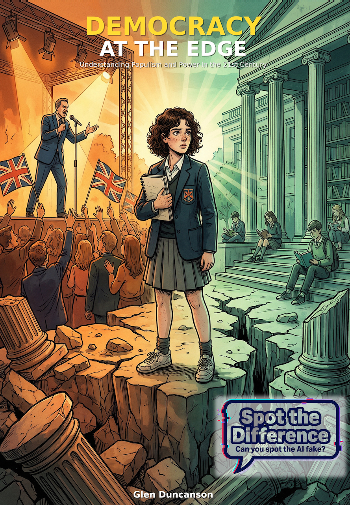

Democracy at the Edge
A graphic novel about democracy, populism, misinformation, and what one teenager can do when politics starts tearing a town apart.

About the book
In Greymouth, a fictional northern English town where the factory has just closed, fifteen-year-old Alex tries to understand why her family is splitting apart over politics.
What she discovers, online and at a rally and in her uncle's kitchen, takes her from outrage to investigation. The story asks how lies spread faster than facts, why people choose belonging over truth, and what one teenager can actually do about it.
Who it is for
Readers aged fourteen and up, especially students, teachers, and anyone interested in democracy, media, and civic life.
What makes it useful
It works as both a story and a classroom conversation starter for Citizenship, PSHE, Media Studies, History, and Politics.
Choose your format
Read it free as a PDF or buy a physical paperback copy on Amazon.
Choose how you want to read it
Download the free PDF here, or buy the paperback on Amazon.